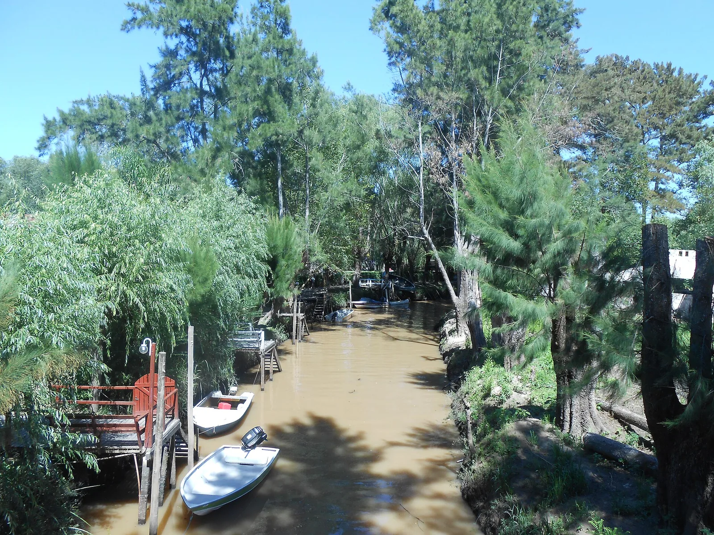
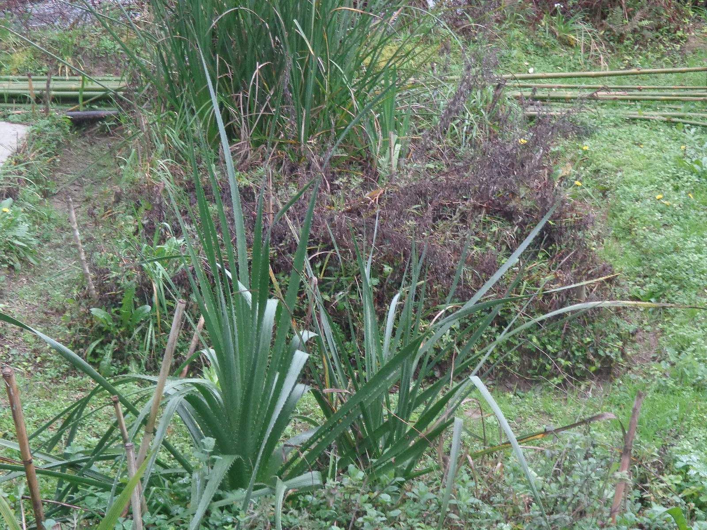
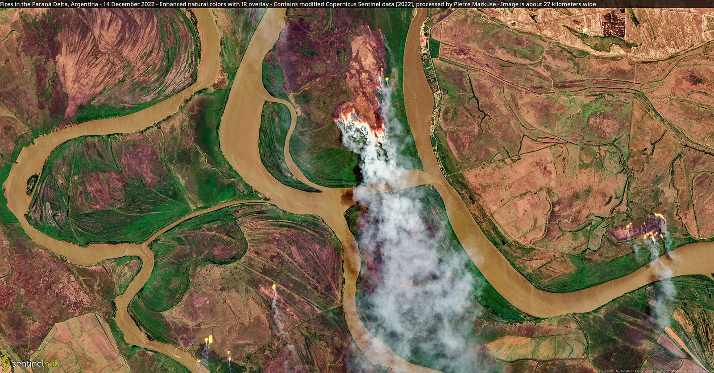

E7 · Este
E7 · Osten
E7 · East
Delta del Paraná
Vi islas nuevas, hechas de barro, que un río le regala al mar todos los días.
Ich sah neue Inseln aus Schlamm, die ein Fluss dem Meer jeden Tag schenkt.
I saw new islands, made of mud, that a river gives to the sea every day.
Información
El Delta del Paraná se forma con el sedimento que el río arrastra desde el norte y deposita al llegar al Río de la Plata. Es uno de los pocos deltas del mundo que no desemboca en el mar abierto sino en otro río, y crece de manera continua: las islas nuevas son barro recién depositado.
Information
El Delta del Paraná se forma con el sedimento que el río arrastra desde el norte y deposita al llegar al Río de la Plata. Es uno de los pocos deltas del mundo que no desemboca en el mar abierto sino en otro río, y crece de manera continua: las islas nuevas son barro recién depositado.
Information
El Delta del Paraná se forma con el sedimento que el río arrastra desde el norte y deposita al llegar al Río de la Plata. Es uno de los pocos deltas del mundo que no desemboca en el mar abierto sino en otro río, y crece de manera continua: las islas nuevas son barro recién depositado.
Un río, el más ancho de todos, que un año se secó tanto que se podía cruzar caminando.
Ein Fluss, der breiteste von allen, der in einem Jahr so weit austrocknete, dass man zu Fuß hindurchgehen konnte.
A river, the widest of them all, that one year dried up so much you could cross it on foot.
Entre 2020 y 2021 el Paraná atravesó la bajante más severa desde 1944. El Instituto Nacional del Agua registró una caída brusca de los caudales desde marzo de 2020; a fines de diciembre de 2021 el río llevaba 291 días seguidos por debajo del nivel de aguas bajas.
Entre 2020 y 2021 el Paraná atravesó la bajante más severa desde 1944. El Instituto Nacional del Agua registró una caída brusca de los caudales desde marzo de 2020; a fines de diciembre de 2021 el río llevaba 291 días seguidos por debajo del nivel de aguas bajas.
Entre 2020 y 2021 el Paraná atravesó la bajante más severa desde 1944. El Instituto Nacional del Agua registró una caída brusca de los caudales desde marzo de 2020; a fines de diciembre de 2021 el río llevaba 291 días seguidos por debajo del nivel de aguas bajas.
Galería
Galerie
Gallery



Fuentes
Quellen
Sources
- Instituto Nacional del Agua, Argentina, Bajante histórica del río Paraná, informe — https://www.argentina.gob.ar/sites/default/files/2021/09/informe_bajante_150921.pdf consultado 2026-10-05abgerufen 2026-10-05accessed 2026-10-05